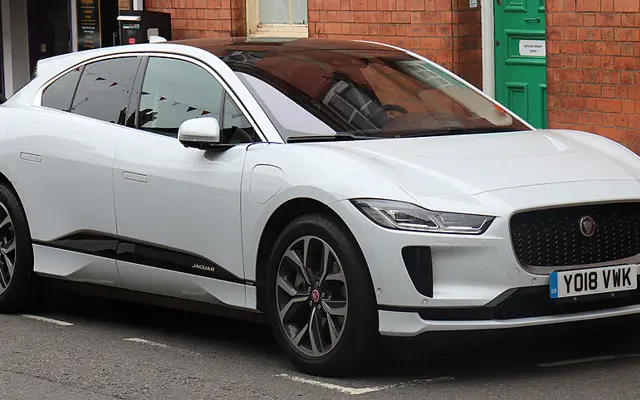

Par Motor › Precios por modelo › Jaguar I-Pace
Precio de segunda mano · noviembre de 2026¿Cuánto vale un Jaguar I-Pace de segunda mano?

Precio justo estimado de un Jaguar I-Pace usado en España, año por año, con los kilómetros normales para su edad y en buen estado: de 24.200 € a 48.200 €. Para tasar el tuyo con sus kilómetros reales y su estado, usa el tasador gratis.
Precios del Jaguar I-Pace por año
I-Pace (2018–2024)
Precio de nuevo: EV400 400 CV, 80.000 €
| Año | Km normales | EV400 400 CV · Eléctrico |
|---|---|---|
| 2024 | 35.000 km | 48.200 € |
| 2023 | 50.000 km | 43.300 € |
| 2022 | 65.000 km | 38.900 € |
| 2021 | 80.000 km | 33.500 € |
| 2020 | 95.000 km | 28.200 € |
| 2019 | 100.000 km | 25.700 € |
| 2018 | 100.000 km | 24.200 € |
Kilómetros normales: 15.000 al año en gasolina, híbridos y eléctricos, y 20.000 en diésel, con un máximo de 100.000 km (por encima no tasamos: el precio depende demasiado del historial de cada coche). Cifras redondeadas a 100 €.
Preguntas frecuentes
¿Cuánto vale un Jaguar I-Pace de segunda mano?
Según el año, la versión y los kilómetros, un Jaguar I-Pace usado vale hoy de 24.200 € a 48.200 € en España. El más barato de nuestra tabla es un EV400 de 2018 (24.200 €) y el más caro un EV400 de 2024 (48.200 €). Son precios justos estimados entre particulares y profesionales, con los kilómetros normales para su edad y en buen estado.
¿Cuánto valor pierde un Jaguar I-Pace al año?
Con unos años encima, un Jaguar I-Pace pierde alrededor de un 13 % de su valor cada año (calculado sobre el EV400 de la generación I-Pace). Los primeros años la caída es mayor y a partir de los 70.000 km se acelera.
¿Qué motorizaciones tiene el Jaguar I-Pace?
En nuestra base de datos hay versiones eléctrico, en 1 generación: I-Pace.
¿Cómo sé si me piden demasiado por un Jaguar I-Pace?
Abre el tasador de Par Motor, elige el Jaguar I-Pace, el año y los kilómetros reales, y escribe lo que te piden. Te diremos si está por debajo del precio justo (chollo) o por encima (caro). Es gratis y no pide registro ni matrícula.
Otros Jaguar
Compara su coste real
El precio de compra es solo una parte. Mira cuánto te costaría al mes con combustible, seguro, neumáticos, mantenimiento y lo que pierde de valor.
Abrir el comparador →